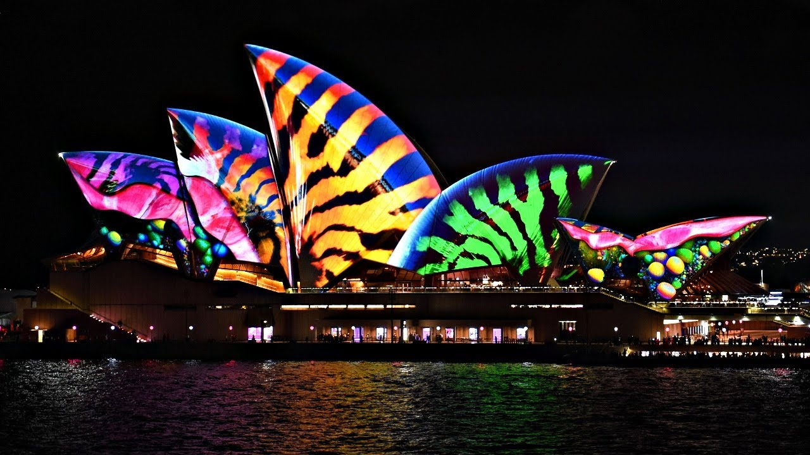
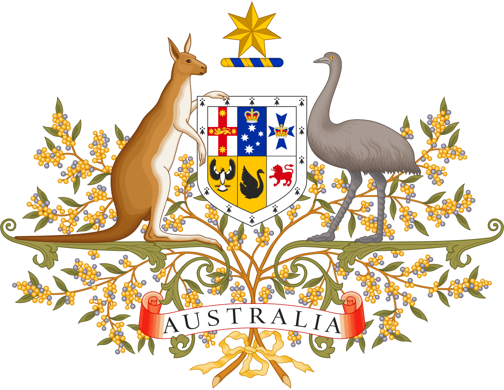
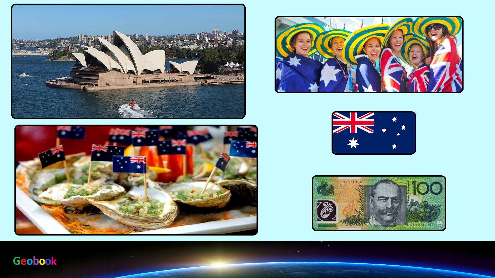

×

Australia
Флаг
Флаг Австралии (англ. Flag of Australia) — один из государственных символов страны, представляющий собой прямоугольное полотнище синего цвета с соотношением сторон 1:2. В левой верхней четверти изображён британский флаг.
Герб
Герб Австралии является официальным символом государства. Герб был дарован стране королём Эдуардом VII 7 мая 1908 года, а текущая версия герба была дарована королём Георгом V 19 сентября 1912 года, хотя версия от 1908 года продолжала использоваться в некоторых случаях до 1966 года.

____
